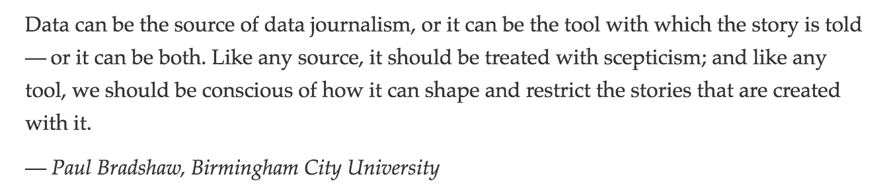
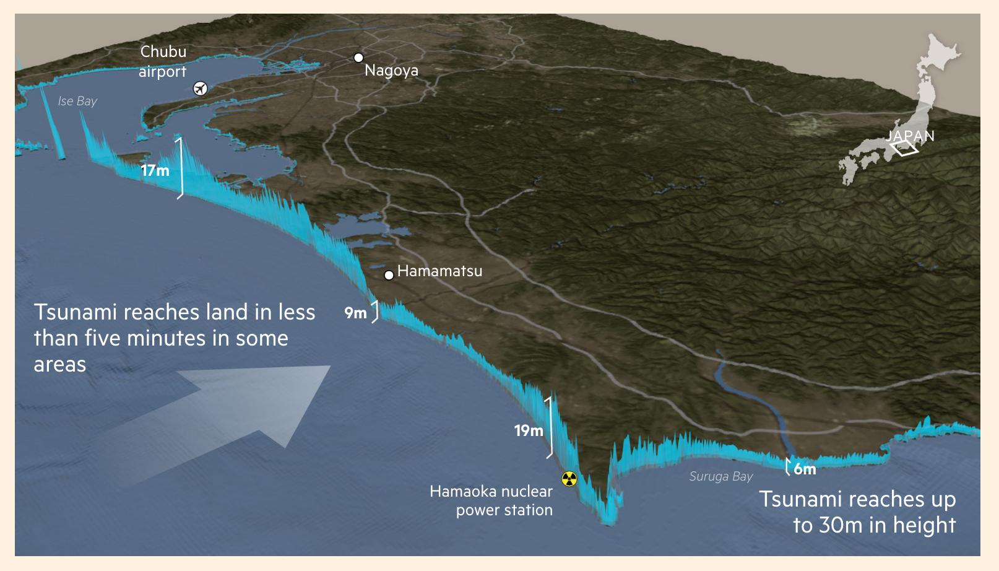

Quantitative journalism: finding and creating(!) data, and using it to tell stories

Contents
• Creating, collecting and curating datasets
• Planning ahead
• Using data to tell stories in compelling ways
• How does this fit into the big picture?
• Resources
What even is data journalism?
Just a buzzword? In some cases, perhaps
But it can also be much more powerful
Data as source
This is increasingly where the value lies
More and more journalists of all descriptions are capable of locating and working with published datasets
// Spreadsheet journalism != data journalism
That should now be expected of any digital journalist. Writing stories based on the same numbers sitting in front of every reporter on your beat leaves you playing the speed game once again
Data as source
So...
The real value is to be found in developing your own datasets. Broadly speaking, this can be done in three ways:
• Creating a dataset ex nihilo
• Collecting or curating datasets to create something worth more than the sum of its parts
• Working with data in cruel and unusual formats
Creating a dataset
Case study: QZ | We brought an antenna to Davos to track private air travel, and here’s what we found

Creating a dataset
Case study: Washington Post | A visual history of Donald Trump dominating the news cycle

Creating a dataset: text analysis
Case study: Wall Street Journal | We Wrote an Algorithm to Unravel the Rhymes of Hit Musical ‘Hamilton’

Combining datasets
Case study: FT | The demographics that drove Brexit

Combining datasets
Case study: FT | The demographics that drove Brexit

Combining datasets
Case study: FT | The demographics that drove Brexit

Combining datasets
Case study: FT | Youth turnout

Combining datasets
Case study: FT | Youth turnout

Combining datasets
Case study: FT | Youth turnout

Creating/collecting
Case study: New York Times | The Cost of Mobile Ads on 50 News Websites

Collecting data through lateral thinking
Case study: Bloomberg | Amazon Doesn’t Consider the Race of Its Customers. Should It?

Curating data ... okay web scraping
Case study: BuzzFeed | The Tennis Racket

Specialist data formats
Case study: FT | What is El Niño and how does it affect global crop yields?

Specialist data formats
Case study: FT | Invasive insects

Telling stories
• Quick scoops
• Big investigations
• Features
• Myth-busting/legitimising
People want interactivity

Using data to add quality
Case study: FT | Invasive species

Using data to add quality
Case study: Guardian | Unaffordable country

Using data to add quality
Case study: Guardian | Unaffordable country

Using data to add quality
Case study: FT | Japan: the next big quake
Justification
• Quality and experience of reporting and visuals unmatched elsewhere
• 'You can't reblog snowfall'
• Rewarded both editorially and commercially
• People will recognise the value of quality over speed
Automation
Case study: FT | EU referendum poll-tracker
Automation
• Automate quantity to free up time and resources for quality
Resources
• Get started with R or Python
• Overview of web-scraping libraries, plus the new kid on the block, Nightmare.js
• D3 javascript library for all things data-visualisation: from 5 minute charts to 5 month interactive masterpieces
• Working with geographical data: QGIS for the fundamentals of digital cartography and styling, Blender for 3D maps, animations, or if time is short try CartoDB
Data sources
Census data for England & Wales, Scotland, the US, France...
Any questions?
You can reach me on Twitter @jburnmurdoch or by email john.burn-murdoch@ft.com
These slides are at bit.ly/ecsj-data